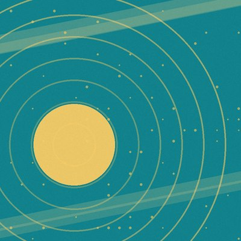
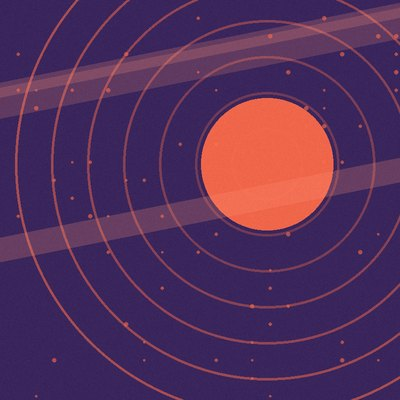
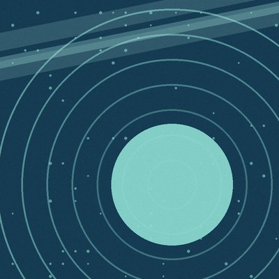
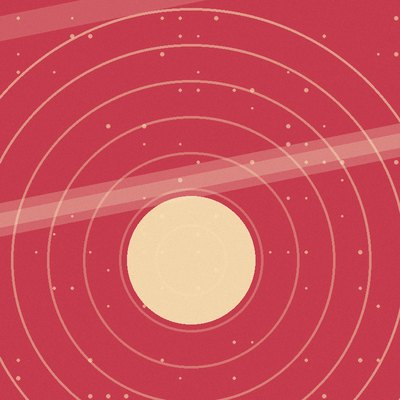
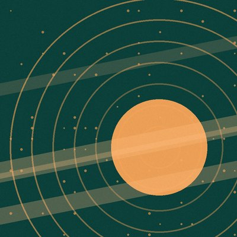
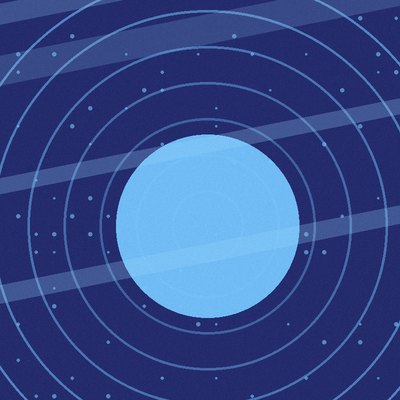
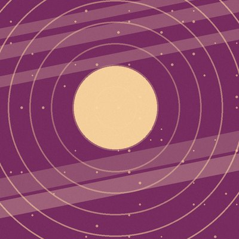
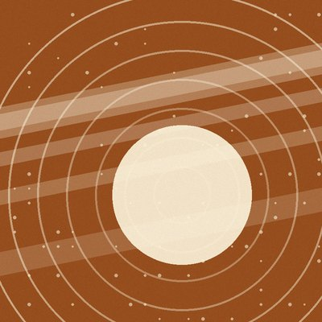

Marea Viva
Cuarteto de Xàbia que lleva diez años tocando lo que ellos llaman «rumba de secano». Presentan su cuarto disco, *Levante*, grabado en directo en una nave del puerto.

Cuarteto de Xàbia que lleva diez años tocando lo que ellos llaman «rumba de secano». Presentan su cuarto disco, *Levante*, grabado en directo en una nave del puerto.

Proyecto en solitario de Clara Benavent. Voz, loopera y un piano Rhodes al que le faltan dos teclas. Sus canciones duran lo que tienen que durar, que a veces son nueve minutos.

Dúo de electrónica ambiental formado en Alicante. Trabajan con grabaciones de campo: el disco que presentan está construido sobre sonidos registrados en la lonja a las cinco de la mañana.

Cantautora menorquina. Empezó cantando en catalán, sigue haciéndolo, y desde el disco anterior también en castellano y en italiano. Toca sola con una guitarra de caja pequeña.

Seis músicos, tres de ellos de la misma familia. Folk mediterráneo con dulzaina, tarota y una sección rítmica que viene del jazz. En directo no paran entre canción y canción.

Trío instrumental de Castellón. Guitarra, contrabajo y batería tocando a un volumen que permite oír el mar de fondo. Es literalmente lo que hacen: empiezan cuando baja el sol.

Banda de ocho personas con sección de viento. Vienen de la escena de Murcia y han tocado en casi todos los festivales de la costa. Cierran el festival desde hace tres ediciones.

Dos hermanas de Elche a la guitarra y la voz. Repertorio de canción popular valenciana revisada, con arreglos escritos por ellas mismas.